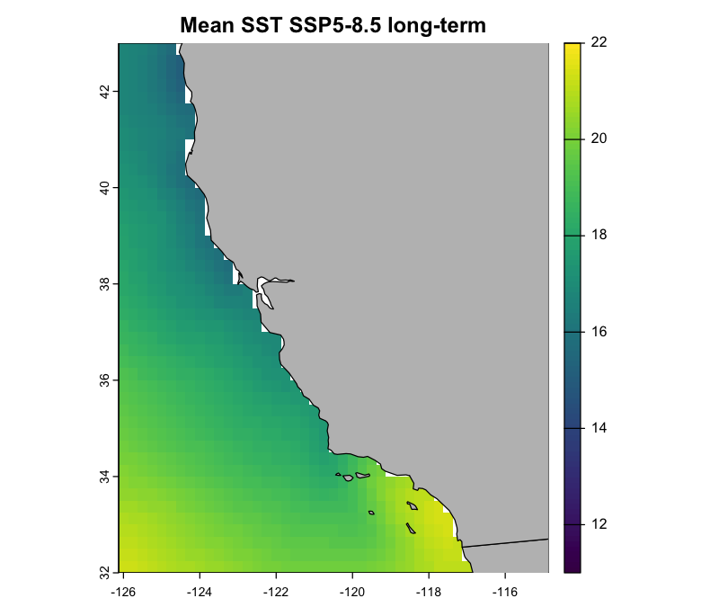

About
Welcome to the workshop! This workshop is designed to assist you in getting started with using Earth System Model (ESM) outputs using R.
The workshop will run from 10 am to 5 pm (PST) on Tuesday 3rd June, 2025.

Instructors
Today’s instructors are Jessica Bolin, Mikaela Provost, Mer Pozo Buil, Nerea Lezama-Ochoa and Mary Fisher
Jessie is a Postdoc in Provost Lab, working on modeling and mapping climate refugia for red abalone across California. Jessie has a background in quantitative marine science and obtained her PhD from the University of the Sunshine Coast in 2024, and has broad research interests spanning climate adaptation, fisheries forecasting, marine disease ecology and sustainable seafood. Jessie has been using R since 2016, and has worked with ESMs since 2021. jabbolin@ucdavis.edu
Mikaela is an Assistant Professor at UC Davis, and the leader of Provost Lab. Mikaela’s research uses theoretical and empirical approaches to address applied problems in fisheries management and marine conservation. Her projects span multiple species and places, and the methods I use can be adapted for a wide variety of taxa. mmprovost@ucdavis.edu
Mer is an Associate Project Scientist at the University of California Santa Cruz. Mer’s research interests are in ocean modeling and large-scale circulation, specifically about subsurface ocean variability, large-scale changes in water masses and circulation, and how they affect upwelling systems.
Nerea is an Associate Project Scientist at the University of California Santa Cruz. Nerea is currently working on the conservation and management of species taken incidentally in tropical tuna purse seine fisheries (bycatch). Nerea’s main research interests are ecological modeling, spatial ecology, oceanography and ecosystem-based management approaches for the conservation of marine top predators.
Mary is a Postdoc in the Baskett Lab, and an interdisciplinary marine scientist interested in how adaptation to climate change affects coupled human-natural systems. Her research has drawn on quantitative and qualitative techniques to explore trade-offs and unexpected consequences associated with climate adaptation in US West Coast fisheries.
Chapter index
- What is an ESM?
- Experiments
- Climate scenarios (SSPs)
- Download ESM output from ESGF
- The ESGF database
- Download
wgetshell scripts - Download
.ncfiles withwgetscripts
- Remapping
- Inspect an ESM
- Remapping with CDO and R
- OISST / observed data
- Download OISST
- Preprocess OISST
- Visualize OISST
- Bias correction & downscaling
- OISST and ESM climatologies
- ESM anomalies
- Interpolate ESM anomalies to OISST grid
- Bias correction
- Evaluate accuracy of historical ESM projections
- Brief explainer
- Create baseline climatologies
- Taylor Diagrams
- Making projections
- Time series
- Spatial projections
- Uncertainty
Workshop materials
The workshop data are ~15 GB, so ensure you have enough storage space on your machine before downloading, or bring an external SSD/Hard-drive.
If you’re a Github user, send Jessie your Github username to be given access to the repo, and you will then be able to fork and clone the repo here. Then, you will then need to download the workshop __data folder here, which needs to be copied into the root directory of esmRworkshop_notes. We’ve added the /__data folder to the .gitignore file within the root directory, since we’ll be working with large files (and Github breaks when pushing/pulling large files).
If you don’t use Github, you can instead download the complete workshop repository here.
Alternatively, you can obtain the materials on the day from us via USB.
On the day, we’ll be working with code contained in the __scripts directory.
We have inserted the expected time duration for running processor-intensive chunks of code in blockquotes throughout the eBook. This is based on Jessie’s machine (MacBook Pro 2023 M3 Max 64 GB Memory). Your machine may be faster or slower, depending on its specifications.
What to bring
- Laptop (highly, highly, highly recommend
macOS) with internet connection. Please ensure you have administrator permissions - consult with your IT department on how to do this. Windows laptops are OK, but the instructors are all macOS natives - we will be using macOS during the workshop, and are unlikely to be able to fix any Windows-related software installation problems that are unfortunately common with some of the tools we’ll be using. - Install the necessary software, listed on the
Prerequisitespage.
Expected outcomes
By the end of the course, participants should be able to:
- Download, inspect, and wrangle netCDF file formats within R
- Use
CDOto speed up netCDF file manipulation - Download ESM output from ESGF and understand terminology re. variables/naming conventions
- Remap and bias-correct ESM outputs from the CMIP6 suite across multiple climate scenarios and time periods
- Make publication-quality figures
Transportation to/from UC Davis
We are arranging for a UCD minivan to transport participants to/from UC Davis main campus, The van has space for up to 12 participants - first-in, first-served. Sign up sheet TBA.
Food
Lunch (sandwiches) will be provided, with vegan and vegetarian options available.
Acknowledgements
We acknowledge funding from the UC Davis Coastal and Marine Science Institute’s internal grant scheme (2024-2025), and thank Bodega Marine Laboratory for providing space and equipment to run the workshop.
We are very thankful for Barb Muhling (UCSC) and Alice Pidd (UniSC) who reviewed workshop materials. We also thank Isaac Brito-Morales for developing the following R workshop materials here and here on analysing netCDFs and climate data, which our workshop took inspiration from. We also thank Dave Schoeman who developed and shared the first iteration of some code in this workshop, and who introduced Jessie to the world of climate models in the first place!
About this book
This is a Quarto book. To learn more, click here.